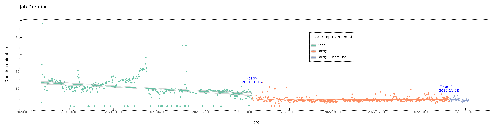
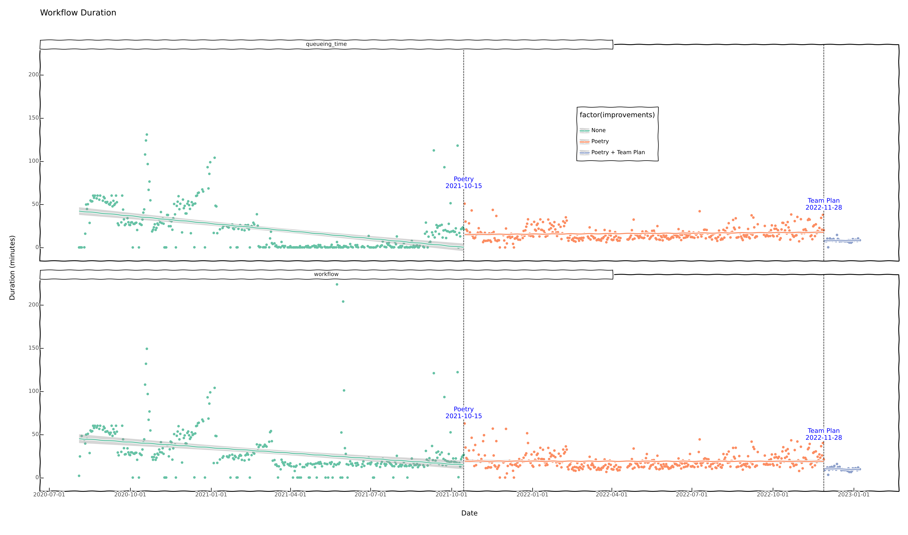
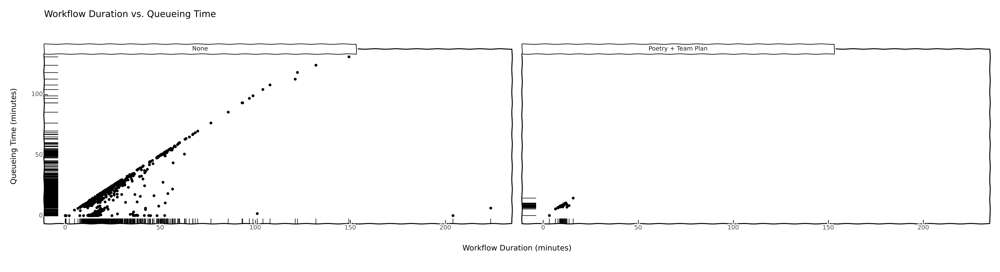

import ibis
from ibis import _
ibis.options.interactive = TrueSummary
This notebook takes you through an analysis of Ibis’s CI data using ibis on top of Google BigQuery.
- First, we load some data and poke around at it to see what’s what.
- Second, we figure out some useful things to calculate based on our poking.
- Third, we’ll visualize the results of calculations to showcase what changed and how.
Imports
Let’s start out by importing ibis and turning on interactive mode.
Connect to BigQuery
We connect to BigQuery using the ibis.connect API, which accepts a URL string indicating the backend and various bit of information needed to connect to the backend. Here we’re using BigQuery, so we need the project id (ibis-gbq) and the dataset id (workflows).
Datasets are analogous to schemas in other systems.
url = "bigquery://ibis-gbq/workflows"
con = ibis.connect(url)Let’s see what tables are available.
con.list_tables()['analysis', 'jobs', 'workflows']Analysis
Here we’ve got our first bit of interesting information: the jobs and workflows tables.
Terminology
Before we jump in, it helps to lay down some terminology.
- A workflow corresponds to an individual GitHub Actions YAML file in a GitHub repository under the
.github/workflowsdirectory. - A job is a named set of steps to run inside a workflow file.
What’s in the workflows table?
Each row in the workflows table corresponds to a workflow run.
- A workflow run is an instance of a workflow that was triggered by some entity: a GitHub user, bot, or other entity. Each row of the
workflowstable is a workflow run.
What’s in the jobs table?
Similarly, each row in the jobs table is a job run. That is, for a given workflow run there are a set of jobs run with it.
- A job run is an instance of a job in a workflow. It is associated with a single workflow run.
Rationale
The goal of this analysis is to try to understand ibis’s CI performance, and whether the amount of time we spent waiting on CI has decreased, stayed the same or increased. Ideally, we can understand the pieces that contribute to the change or lack thereof.
Metrics
To that end there are a few interesting metrics to look at:
- job run duration: this is the amount of time it takes for a given job to complete
- workflow run duration: the amount of time it takes for all job runs in a workflow run to complete.
- queueing duration: the amount time time spent waiting for the first job run to commence.
Mitigating Factors
- Around October 2021, we changed our CI infrastructure to use Poetry instead of Conda. The goal there was to see if we could cache dependencies using the lock file generated by poetry. We should see whether that had any effect.
- At the end of November 2022, we switch to the Team Plan (a paid GitHub plan) for the Ibis organzation. This tripled the amount of job runs that could execute in parallel. We should see if that helped anything.
Alright, let’s jump into some data!
jobs = con.tables.jobs[_.started_at < "2023-01-09"]
jobs┏━━━━━━━━━━━━━━━━━━━━━━━━━━━━━━━━━━━━━━━━━━━━━━━━━━━━━━━━━━━━━━━━━━━━━━━┳━━━━━━━━━━━━━━━━━━━━━━━━━━━━━━━━━━━━━━━━━━━━━━━━━━━━━━━━━━━━━━━━━━━━━━━━━━━━━━━━━━┳━━━━━━━━━━━┳━━━━━━━━━━━━━━━━━━━━━━━━━━━┳━━━━━━━━━━━━━━━━━━━┳━━━━━━━━━━━━━┳━━━━━━━━━━━━━━━━━━━━━━━━━━━┳━━━━━━━━━━━━━━━┳━━━━━━━━━━━━━━━━━━━━━━━━━━━━━━┳━━━━━━━━━━━┳━━━━━━━━━━━┳━━━━━━━━━━━━━━━━━━━━━━━━━━━━━━━━━━━━━━━━━━━━━━━━━━━━━━━━━━━━━━━━━━━━━━━┳━━━━━━━━━━━┳━━━━━━━━━━━━━━━━━━━━━━━━━━━━━━━━━━━━━━━━━━━━━━━━━━━━━━━━━━━━━━━━━━━━━┳━━━━━━━━━━━━━━━━━━━━━━━━━━━━━━━━━━━━━━━━━━━━━━━━━━━━━━━━━━━━━━━━━━━━━━━━━━━━┳━━━━━━━━━━━━━┳━━━━━━━━━━━━━━━━━┳━━━━━━━━━━━━━━━━━━━━━━━━━━━━━━━━━━━━━━━━━━┳━━━━━━━━━━━━┳━━━━━━━━━━━━━━━━━━━━━━━━━━━┓ ┃ url ┃ steps ┃ status ┃ started_at ┃ runner_group_name ┃ run_attempt ┃ name ┃ labels ┃ node_id ┃ id ┃ runner_id ┃ run_url ┃ run_id ┃ check_run_url ┃ html_url ┃ runner_name ┃ runner_group_id ┃ head_sha ┃ conclusion ┃ completed_at ┃ ┡━━━━━━━━━━━━━━━━━━━━━━━━━━━━━━━━━━━━━━━━━━━━━━━━━━━━━━━━━━━━━━━━━━━━━━━╇━━━━━━━━━━━━━━━━━━━━━━━━━━━━━━━━━━━━━━━━━━━━━━━━━━━━━━━━━━━━━━━━━━━━━━━━━━━━━━━━━━╇━━━━━━━━━━━╇━━━━━━━━━━━━━━━━━━━━━━━━━━━╇━━━━━━━━━━━━━━━━━━━╇━━━━━━━━━━━━━╇━━━━━━━━━━━━━━━━━━━━━━━━━━━╇━━━━━━━━━━━━━━━╇━━━━━━━━━━━━━━━━━━━━━━━━━━━━━━╇━━━━━━━━━━━╇━━━━━━━━━━━╇━━━━━━━━━━━━━━━━━━━━━━━━━━━━━━━━━━━━━━━━━━━━━━━━━━━━━━━━━━━━━━━━━━━━━━━╇━━━━━━━━━━━╇━━━━━━━━━━━━━━━━━━━━━━━━━━━━━━━━━━━━━━━━━━━━━━━━━━━━━━━━━━━━━━━━━━━━━╇━━━━━━━━━━━━━━━━━━━━━━━━━━━━━━━━━━━━━━━━━━━━━━━━━━━━━━━━━━━━━━━━━━━━━━━━━━━━╇━━━━━━━━━━━━━╇━━━━━━━━━━━━━━━━━╇━━━━━━━━━━━━━━━━━━━━━━━━━━━━━━━━━━━━━━━━━━╇━━━━━━━━━━━━╇━━━━━━━━━━━━━━━━━━━━━━━━━━━┩ │ string │ array<struct<status: string, conclusion: string, started_at: timestamp('UTC'), … │ string │ timestamp('UTC') │ string │ int64 │ string │ array<string> │ string │ int64 │ int64 │ string │ int64 │ string │ string │ string │ int64 │ string │ string │ timestamp('UTC') │ ├───────────────────────────────────────────────────────────────────────┼──────────────────────────────────────────────────────────────────────────────────┼───────────┼───────────────────────────┼───────────────────┼─────────────┼───────────────────────────┼───────────────┼──────────────────────────────┼───────────┼───────────┼───────────────────────────────────────────────────────────────────────┼───────────┼─────────────────────────────────────────────────────────────────────┼────────────────────────────────────────────────────────────────────────────┼─────────────┼─────────────────┼──────────────────────────────────────────┼────────────┼───────────────────────────┤ │ https://api.github.com/repos/ibis-project/ibis/actions/jobs/947152589 │ [{...}, {...}, ... +12] │ completed │ 2020-08-04 23:54:37+00:00 │ NULL │ 1 │ Test Conda │ [] │ MDg6Q2hlY2tSdW45NDcxNTI1ODk= │ 947152589 │ NULL │ https://api.github.com/repos/ibis-project/ibis/actions/runs/195478382 │ 195478382 │ https://api.github.com/repos/ibis-project/ibis/check-runs/947152589 │ https://github.com/ibis-project/ibis/runs/947152589?check_suite_focus=true │ NULL │ NULL │ 29c148e9679a53c7bb99755347e336d6c1f4d8c8 │ success │ 2020-08-04 23:56:50+00:00 │ │ https://api.github.com/repos/ibis-project/ibis/actions/jobs/947152601 │ [{...}, {...}, ... +5] │ completed │ 2020-08-04 23:54:37+00:00 │ NULL │ 1 │ Test setup miniconda task │ [] │ MDg6Q2hlY2tSdW45NDcxNTI2MDE= │ 947152601 │ NULL │ https://api.github.com/repos/ibis-project/ibis/actions/runs/195478382 │ 195478382 │ https://api.github.com/repos/ibis-project/ibis/check-runs/947152601 │ https://github.com/ibis-project/ibis/runs/947152601?check_suite_focus=true │ NULL │ NULL │ 29c148e9679a53c7bb99755347e336d6c1f4d8c8 │ failure │ 2020-08-04 23:56:59+00:00 │ │ https://api.github.com/repos/ibis-project/ibis/actions/jobs/947147571 │ [{...}, {...}, ... +5] │ completed │ 2020-08-04 23:51:54+00:00 │ NULL │ 1 │ Test setup miniconda task │ [] │ MDg6Q2hlY2tSdW45NDcxNDc1NzE= │ 947147571 │ NULL │ https://api.github.com/repos/ibis-project/ibis/actions/runs/195476517 │ 195476517 │ https://api.github.com/repos/ibis-project/ibis/check-runs/947147571 │ https://github.com/ibis-project/ibis/runs/947147571?check_suite_focus=true │ NULL │ NULL │ 501d9cc1f2f8d016b1e4fe44ebfc3e1facaa3c91 │ failure │ 2020-08-04 23:54:48+00:00 │ │ https://api.github.com/repos/ibis-project/ibis/actions/jobs/947147586 │ [{...}, {...}, ... +12] │ completed │ 2020-08-04 23:51:53+00:00 │ NULL │ 1 │ Test Conda │ [] │ MDg6Q2hlY2tSdW45NDcxNDc1ODY= │ 947147586 │ NULL │ https://api.github.com/repos/ibis-project/ibis/actions/runs/195476517 │ 195476517 │ https://api.github.com/repos/ibis-project/ibis/check-runs/947147586 │ https://github.com/ibis-project/ibis/runs/947147586?check_suite_focus=true │ NULL │ NULL │ 501d9cc1f2f8d016b1e4fe44ebfc3e1facaa3c91 │ failure │ 2020-08-04 23:54:15+00:00 │ │ https://api.github.com/repos/ibis-project/ibis/actions/jobs/947144553 │ [{...}, {...}, ... +11] │ completed │ 2020-08-04 23:50:19+00:00 │ NULL │ 1 │ Test Conda │ [] │ MDg6Q2hlY2tSdW45NDcxNDQ1NTM= │ 947144553 │ NULL │ https://api.github.com/repos/ibis-project/ibis/actions/runs/195475525 │ 195475525 │ https://api.github.com/repos/ibis-project/ibis/check-runs/947144553 │ https://github.com/ibis-project/ibis/runs/947144553?check_suite_focus=true │ NULL │ NULL │ 963821c370fb8f10f915e4b29e1c78f053c6e7b0 │ failure │ 2020-08-04 23:52:45+00:00 │ │ https://api.github.com/repos/ibis-project/ibis/actions/jobs/947144585 │ [{...}, {...}, ... +5] │ completed │ 2020-08-04 23:50:20+00:00 │ NULL │ 1 │ Test setup miniconda task │ [] │ MDg6Q2hlY2tSdW45NDcxNDQ1ODU= │ 947144585 │ NULL │ https://api.github.com/repos/ibis-project/ibis/actions/runs/195475525 │ 195475525 │ https://api.github.com/repos/ibis-project/ibis/check-runs/947144585 │ https://github.com/ibis-project/ibis/runs/947144585?check_suite_focus=true │ NULL │ NULL │ 963821c370fb8f10f915e4b29e1c78f053c6e7b0 │ failure │ 2020-08-04 23:52:53+00:00 │ │ https://api.github.com/repos/ibis-project/ibis/actions/jobs/947123154 │ [{...}, {...}, ... +5] │ completed │ 2020-08-04 23:39:58+00:00 │ NULL │ 1 │ Test setup miniconda task │ [] │ MDg6Q2hlY2tSdW45NDcxMjMxNTQ= │ 947123154 │ NULL │ https://api.github.com/repos/ibis-project/ibis/actions/runs/195468677 │ 195468677 │ https://api.github.com/repos/ibis-project/ibis/check-runs/947123154 │ https://github.com/ibis-project/ibis/runs/947123154?check_suite_focus=true │ NULL │ NULL │ fcab3265e8afd70dddc518601b33661d15e19f62 │ failure │ 2020-08-04 23:42:36+00:00 │ │ https://api.github.com/repos/ibis-project/ibis/actions/jobs/947123167 │ [{...}, {...}, ... +9] │ completed │ 2020-08-04 23:39:57+00:00 │ NULL │ 1 │ Test Conda │ [] │ MDg6Q2hlY2tSdW45NDcxMjMxNjc= │ 947123167 │ NULL │ https://api.github.com/repos/ibis-project/ibis/actions/runs/195468677 │ 195468677 │ https://api.github.com/repos/ibis-project/ibis/check-runs/947123167 │ https://github.com/ibis-project/ibis/runs/947123167?check_suite_focus=true │ NULL │ NULL │ fcab3265e8afd70dddc518601b33661d15e19f62 │ failure │ 2020-08-04 23:42:15+00:00 │ │ https://api.github.com/repos/ibis-project/ibis/actions/jobs/947111435 │ [{...}, {...}, ... +9] │ completed │ 2020-08-04 23:34:19+00:00 │ NULL │ 1 │ Test Conda │ [] │ MDg6Q2hlY2tSdW45NDcxMTE0MzU= │ 947111435 │ NULL │ https://api.github.com/repos/ibis-project/ibis/actions/runs/195465343 │ 195465343 │ https://api.github.com/repos/ibis-project/ibis/check-runs/947111435 │ https://github.com/ibis-project/ibis/runs/947111435?check_suite_focus=true │ NULL │ NULL │ 0b496d97d80f22c5a1a7db27cffd3f71a0d28941 │ failure │ 2020-08-04 23:36:26+00:00 │ │ https://api.github.com/repos/ibis-project/ibis/actions/jobs/947111464 │ [{...}, {...}, ... +5] │ completed │ 2020-08-04 23:34:19+00:00 │ NULL │ 1 │ Test setup miniconda task │ [] │ MDg6Q2hlY2tSdW45NDcxMTE0NjQ= │ 947111464 │ NULL │ https://api.github.com/repos/ibis-project/ibis/actions/runs/195465343 │ 195465343 │ https://api.github.com/repos/ibis-project/ibis/check-runs/947111464 │ https://github.com/ibis-project/ibis/runs/947111464?check_suite_focus=true │ NULL │ NULL │ 0b496d97d80f22c5a1a7db27cffd3f71a0d28941 │ failure │ 2020-08-04 23:36:28+00:00 │ │ … │ … │ … │ … │ … │ … │ … │ … │ … │ … │ … │ … │ … │ … │ … │ … │ … │ … │ … │ … │ └───────────────────────────────────────────────────────────────────────┴──────────────────────────────────────────────────────────────────────────────────┴───────────┴───────────────────────────┴───────────────────┴─────────────┴───────────────────────────┴───────────────┴──────────────────────────────┴───────────┴───────────┴───────────────────────────────────────────────────────────────────────┴───────────┴─────────────────────────────────────────────────────────────────────┴────────────────────────────────────────────────────────────────────────────┴─────────────┴─────────────────┴──────────────────────────────────────────┴────────────┴───────────────────────────┘
These first few columns in the jobs table aren’t that interesting so we should look at what else is there
jobs.columns['url',
'steps',
'status',
'started_at',
'runner_group_name',
'run_attempt',
'name',
'labels',
'node_id',
'id',
'runner_id',
'run_url',
'run_id',
'check_run_url',
'html_url',
'runner_name',
'runner_group_id',
'head_sha',
'conclusion',
'completed_at']A bunch of these aren’t that useful for our purposes. However, run_id, started_at, completed_at are useful for us. The GitHub documentation for job information provides useful detail about the meaning of these fields.
run_id: the workflow run associated with this job runstarted_at: when the job startedcompleted_at: when the job completed
What we’re interested in to a first degree is the job duration, so let’s compute that.
We also need to compute when the last job for a given run_id started and when it completed. We’ll use the former to compute the queueing duration, and the latter to compute the total time it took for a given workflow run to complete.
run_id_win = ibis.window(group_by=_.run_id)
jobs = jobs.select(
_.run_id,
job_duration=_.completed_at.delta(_.started_at, "microsecond"),
last_job_started_at=_.started_at.max().over(run_id_win),
last_job_completed_at=_.completed_at.max().over(run_id_win),
)
jobs┏━━━━━━━━━━━┳━━━━━━━━━━━━━━┳━━━━━━━━━━━━━━━━━━━━━━━━━━━┳━━━━━━━━━━━━━━━━━━━━━━━━━━━┓ ┃ run_id ┃ job_duration ┃ last_job_started_at ┃ last_job_completed_at ┃ ┡━━━━━━━━━━━╇━━━━━━━━━━━━━━╇━━━━━━━━━━━━━━━━━━━━━━━━━━━╇━━━━━━━━━━━━━━━━━━━━━━━━━━━┩ │ int64 │ int64 │ timestamp('UTC') │ timestamp('UTC') │ ├───────────┼──────────────┼───────────────────────────┼───────────────────────────┤ │ 236503770 │ 1109000000 │ 2020-09-02 19:06:50+00:00 │ 2020-09-02 19:06:50+00:00 │ │ 236503770 │ 636000000 │ 2020-09-02 19:06:50+00:00 │ 2020-09-02 19:06:50+00:00 │ │ 236503770 │ 594000000 │ 2020-09-02 19:06:50+00:00 │ 2020-09-02 19:06:50+00:00 │ │ 236503770 │ 459000000 │ 2020-09-02 19:06:50+00:00 │ 2020-09-02 19:06:50+00:00 │ │ 236503770 │ 430000000 │ 2020-09-02 19:06:50+00:00 │ 2020-09-02 19:06:50+00:00 │ │ 236503770 │ 3268000000 │ 2020-09-02 19:06:50+00:00 │ 2020-09-02 19:06:50+00:00 │ │ 236503770 │ 0 │ 2020-09-02 19:06:50+00:00 │ 2020-09-02 19:06:50+00:00 │ │ 243835537 │ 565000000 │ 2020-09-08 02:45:31+00:00 │ 2020-09-08 02:45:31+00:00 │ │ 243835537 │ 581000000 │ 2020-09-08 02:45:31+00:00 │ 2020-09-08 02:45:31+00:00 │ │ 243835537 │ 644000000 │ 2020-09-08 02:45:31+00:00 │ 2020-09-08 02:45:31+00:00 │ │ … │ … │ … │ … │ └───────────┴──────────────┴───────────────────────────┴───────────────────────────┘
Let’s take a look at workflows
workflows = con.tables.workflows
workflows┏━━━━━━━━━━━━━━━━━━━━━━━━━━━━━━━━━━━━━━━━━━━━━━━━━━━━━━━━━━━━━━━━━━━━━━━━━━┳━━━━━━━━━━━━━┳━━━━━━━━━━━━━━━━━━┳━━━━━━━━━━━━┳━━━━━━━━━━━━━┳━━━━━━━━━━━━━━━━━━━━━━━━━━━┳━━━━━━━━━━━━━━━━━━━━━━━━━━━━━━━━━━━━━━━━━━━━━━━━━━━━━━━━━━━━━━━━━━━━━━━━━━━━━━┳━━━━━━━━━━━━━━━━━━━━━━━━━━━━━━━━━━━━━━━━━━━━━━━━━━━━━━━━━━━━━━━━━━━━━━━━━━━━━┳━━━━━━━━━━━━━━━━━━━━━━━━━━━━━━━━━━┳━━━━━━━━━━━━━━━━━━━━━━━━━━━━━━━━━━━━━━━━━━━━━━━━━━━━━━━━━━━━━━━━━━━━━━━━━━━━━━━━━━┳━━━━━━━━━━━┳━━━━━━━━━━━━━━━━━━━━━━━━━━━━━━━━━━┳━━━━━━━━━━━┳━━━━━━━━━━━━━━━━━━━━━━━━━━━━━━━━━━━━━━━━━━━━━━━━━━━━━━━━━━━━━━━━━━━━━━━━━━━━━━━━━━━━━━━━━━━━━━━━━━━━━━━━━━━━━━━━━━━━━━━━━━━━━━━━━━━━━━━━━━━━━━━━━━━━━━━━━━━━━━━┳━━━━━━━━━━━━━━━━━━━━━━━━━━━━━━━━━━━━━━━━━━━━━━━━━━━━━━━━━━━━━━━━━━━━━━━━━━━━┳━━━━━━━━━━━━━━━━━━━━━━┳━━━━━━━━━━━━━━━━━━━━━━━━━━━━━━━━━━━━━━━━━━━━━━━━━━━━━━━━━━━━━━━━━━━━━━━━━━━━━━━━━┳━━━━━━━━━━━━━━━━━━━━━━━━━━━━━━━━━━━━━━━━━━━━━━━━━━━━━━━━━━━━━┳━━━━━━━━━━━━━━━━━━━━━━━━━━━━━━━━━━━━━━━━━━┳━━━━━━━━━━━━━━━━━━━━━━━━━━━━━━━━━━━━━━━━━━━━━━━━━━━━━━━━━━━━━━━━━━━━━━━━━━━━━━━━━━━━━━━━━━━━━━━━━━━━━━━━━━━━━━━━━━━━━━━━━━━━━━━━━━━━━━━━━━━━━━━━━━━━━━━━━━━━━━━━━━━┳━━━━━━━━━━━━━━━━━━━━━━━━━━━┳━━━━━━━━━━━━━━━┳━━━━━━━━━━━━━━━━━━━━━━━━━━━━━━━━━━━━━━━━━━━━━━━━━━━━━━━━━━━━━━━━━━━━━━━┳━━━━━━━━━━━━━━┳━━━━━━━━┳━━━━━━━┳━━━━━━━━━━━━━━━━━━━━━━━━━━━┳━━━━━━━━━━━━━━━━━━━━━━━━━━━━━━━━━━━━━━━━━━━━━━━━━━━━━━━━━━━━━━━━━━━━━━━━┳━━━━━━━━━━━━━━━━┳━━━━━━━━━━━━┳━━━━━━━━━━━━━━━━━━━━━━━━━━━━━━━━━━━━━━━━━━━━━━━━━━━━━━━━━━━━━━━━━━━━━━━━━━━━━━━━━━━━━━━━━━━━━━━━━━━━━━━━━━━━━━━━━━━━━━━━━━━━━━━━━━━━━━━┳━━━━━━━━━━━━━━━━━━━━━━━━━━━━━━━━━━━━━━━━━━━━━━━━━━━━━━━━━━━━━━━━━━━━━━━━━━━━┓ ┃ workflow_url ┃ workflow_id ┃ triggering_actor ┃ run_number ┃ run_attempt ┃ updated_at ┃ cancel_url ┃ rerun_url ┃ check_suite_node_id ┃ pull_requests ┃ id ┃ node_id ┃ status ┃ repository ┃ jobs_url ┃ previous_attempt_url ┃ artifacts_url ┃ html_url ┃ head_sha ┃ head_repository ┃ run_started_at ┃ head_branch ┃ url ┃ event ┃ name ┃ actor ┃ created_at ┃ check_suite_url ┃ check_suite_id ┃ conclusion ┃ head_commit ┃ logs_url ┃ ┡━━━━━━━━━━━━━━━━━━━━━━━━━━━━━━━━━━━━━━━━━━━━━━━━━━━━━━━━━━━━━━━━━━━━━━━━━━╇━━━━━━━━━━━━━╇━━━━━━━━━━━━━━━━━━╇━━━━━━━━━━━━╇━━━━━━━━━━━━━╇━━━━━━━━━━━━━━━━━━━━━━━━━━━╇━━━━━━━━━━━━━━━━━━━━━━━━━━━━━━━━━━━━━━━━━━━━━━━━━━━━━━━━━━━━━━━━━━━━━━━━━━━━━━╇━━━━━━━━━━━━━━━━━━━━━━━━━━━━━━━━━━━━━━━━━━━━━━━━━━━━━━━━━━━━━━━━━━━━━━━━━━━━━╇━━━━━━━━━━━━━━━━━━━━━━━━━━━━━━━━━━╇━━━━━━━━━━━━━━━━━━━━━━━━━━━━━━━━━━━━━━━━━━━━━━━━━━━━━━━━━━━━━━━━━━━━━━━━━━━━━━━━━━╇━━━━━━━━━━━╇━━━━━━━━━━━━━━━━━━━━━━━━━━━━━━━━━━╇━━━━━━━━━━━╇━━━━━━━━━━━━━━━━━━━━━━━━━━━━━━━━━━━━━━━━━━━━━━━━━━━━━━━━━━━━━━━━━━━━━━━━━━━━━━━━━━━━━━━━━━━━━━━━━━━━━━━━━━━━━━━━━━━━━━━━━━━━━━━━━━━━━━━━━━━━━━━━━━━━━━━━━━━━━━━╇━━━━━━━━━━━━━━━━━━━━━━━━━━━━━━━━━━━━━━━━━━━━━━━━━━━━━━━━━━━━━━━━━━━━━━━━━━━━╇━━━━━━━━━━━━━━━━━━━━━━╇━━━━━━━━━━━━━━━━━━━━━━━━━━━━━━━━━━━━━━━━━━━━━━━━━━━━━━━━━━━━━━━━━━━━━━━━━━━━━━━━━╇━━━━━━━━━━━━━━━━━━━━━━━━━━━━━━━━━━━━━━━━━━━━━━━━━━━━━━━━━━━━━╇━━━━━━━━━━━━━━━━━━━━━━━━━━━━━━━━━━━━━━━━━━╇━━━━━━━━━━━━━━━━━━━━━━━━━━━━━━━━━━━━━━━━━━━━━━━━━━━━━━━━━━━━━━━━━━━━━━━━━━━━━━━━━━━━━━━━━━━━━━━━━━━━━━━━━━━━━━━━━━━━━━━━━━━━━━━━━━━━━━━━━━━━━━━━━━━━━━━━━━━━━━━━━━━╇━━━━━━━━━━━━━━━━━━━━━━━━━━━╇━━━━━━━━━━━━━━━╇━━━━━━━━━━━━━━━━━━━━━━━━━━━━━━━━━━━━━━━━━━━━━━━━━━━━━━━━━━━━━━━━━━━━━━━╇━━━━━━━━━━━━━━╇━━━━━━━━╇━━━━━━━╇━━━━━━━━━━━━━━━━━━━━━━━━━━━╇━━━━━━━━━━━━━━━━━━━━━━━━━━━━━━━━━━━━━━━━━━━━━━━━━━━━━━━━━━━━━━━━━━━━━━━━╇━━━━━━━━━━━━━━━━╇━━━━━━━━━━━━╇━━━━━━━━━━━━━━━━━━━━━━━━━━━━━━━━━━━━━━━━━━━━━━━━━━━━━━━━━━━━━━━━━━━━━━━━━━━━━━━━━━━━━━━━━━━━━━━━━━━━━━━━━━━━━━━━━━━━━━━━━━━━━━━━━━━━━━━╇━━━━━━━━━━━━━━━━━━━━━━━━━━━━━━━━━━━━━━━━━━━━━━━━━━━━━━━━━━━━━━━━━━━━━━━━━━━━┩ │ string │ int64 │ struct<subscrip… │ int64 │ int64 │ timestamp('UTC') │ string │ string │ string │ array<struct<number: int64, url: string, id: int64, head: struct<sha: string, r… │ int64 │ string │ string │ struct<trees_url: string, teams_url: string, statuses_url: string, subscribers_… │ string │ string │ string │ string │ string │ struct<trees_url: string, teams_url: string, statuses_url: string, subscribers_… │ timestamp('UTC') │ string │ string │ string │ string │ stru… │ timestamp('UTC') │ string │ int64 │ string │ struct<tree_id: string, timestamp: timestamp('UTC'), message: string, id: strin… │ string │ ├──────────────────────────────────────────────────────────────────────────┼─────────────┼──────────────────┼────────────┼─────────────┼───────────────────────────┼──────────────────────────────────────────────────────────────────────────────┼─────────────────────────────────────────────────────────────────────────────┼──────────────────────────────────┼──────────────────────────────────────────────────────────────────────────────────┼───────────┼──────────────────────────────────┼───────────┼───────────────────────────────────────────────────────────────────────────────────────────────────────────────────────────────────────────────────────────────┼────────────────────────────────────────────────────────────────────────────┼──────────────────────┼─────────────────────────────────────────────────────────────────────────────────┼─────────────────────────────────────────────────────────────┼──────────────────────────────────────────┼───────────────────────────────────────────────────────────────────────────────────────────────────────────────────────────────────────────────────────────────────┼───────────────────────────┼───────────────┼───────────────────────────────────────────────────────────────────────┼──────────────┼────────┼───────┼───────────────────────────┼────────────────────────────────────────────────────────────────────────┼────────────────┼────────────┼───────────────────────────────────────────────────────────────────────────────────────────────────────────────────────────────────────┼────────────────────────────────────────────────────────────────────────────┤ │ https://api.github.com/repos/ibis-project/ibis/actions/workflows/2100986 │ 2100986 │ NULL │ 28 │ 1 │ 2020-08-05 20:01:17+00:00 │ https://api.github.com/repos/ibis-project/ibis/actions/runs/196667191/cancel │ https://api.github.com/repos/ibis-project/ibis/actions/runs/196667191/rerun │ MDEwOkNoZWNrU3VpdGUxMDEzMDI5NDkw │ [] │ 196667191 │ MDExOldvcmtmbG93UnVuMTk2NjY3MTkx │ completed │ {'trees_url': 'https://api.github.com/repos/ibis-project/ibis/git/trees{/sha}', 'teams_url': 'https://api.github.com/repos/ibis-project/ibis/teams', ... +44} │ https://api.github.com/repos/ibis-project/ibis/actions/runs/196667191/jobs │ NULL │ https://api.github.com/repos/ibis-project/ibis/actions/runs/196667191/artifacts │ https://github.com/ibis-project/ibis/actions/runs/196667191 │ 08855609f1e9ebdeb6197887cf64ecda015d99a8 │ {'trees_url': 'https://api.github.com/repos/ibis-project/ibis/git/trees{/sha}', 'teams_url': 'https://api.github.com/repos/ibis-project/ibis/teams', ... +44} │ 2020-08-05 19:01:08+00:00 │ actions-lint │ https://api.github.com/repos/ibis-project/ibis/actions/runs/196667191 │ pull_request │ Main │ NULL │ 2020-08-05 19:01:08+00:00 │ https://api.github.com/repos/ibis-project/ibis/check-suites/1013029490 │ 1013029490 │ success │ {'tree_id': 'c4277198178ae73c3d9611af464ee75eadbceedc', 'timestamp': datetime.datetime(2020, 8, 5, 19, 0, 57, tzinfo=<UTC>), ... +4} │ https://api.github.com/repos/ibis-project/ibis/actions/runs/196667191/logs │ │ https://api.github.com/repos/ibis-project/ibis/actions/workflows/2100986 │ 2100986 │ NULL │ 27 │ 1 │ 2020-08-05 18:59:37+00:00 │ https://api.github.com/repos/ibis-project/ibis/actions/runs/196617109/cancel │ https://api.github.com/repos/ibis-project/ibis/actions/runs/196617109/rerun │ MDEwOkNoZWNrU3VpdGUxMDEyODM0OTQ3 │ [] │ 196617109 │ MDExOldvcmtmbG93UnVuMTk2NjE3MTA5 │ completed │ {'trees_url': 'https://api.github.com/repos/ibis-project/ibis/git/trees{/sha}', 'teams_url': 'https://api.github.com/repos/ibis-project/ibis/teams', ... +44} │ https://api.github.com/repos/ibis-project/ibis/actions/runs/196617109/jobs │ NULL │ https://api.github.com/repos/ibis-project/ibis/actions/runs/196617109/artifacts │ https://github.com/ibis-project/ibis/actions/runs/196617109 │ 7472797f3e4da39d18e53c09566dba5e373094b0 │ {'trees_url': 'https://api.github.com/repos/ibis-project/ibis/git/trees{/sha}', 'teams_url': 'https://api.github.com/repos/ibis-project/ibis/teams', ... +44} │ 2020-08-05 18:12:34+00:00 │ actions-lint │ https://api.github.com/repos/ibis-project/ibis/actions/runs/196617109 │ pull_request │ Main │ NULL │ 2020-08-05 18:12:34+00:00 │ https://api.github.com/repos/ibis-project/ibis/check-suites/1012834947 │ 1012834947 │ success │ {'tree_id': '451472455efc6f20b81f6e1762ac712ec75e77b3', 'timestamp': datetime.datetime(2020, 8, 5, 18, 12, 25, tzinfo=<UTC>), ... +4} │ https://api.github.com/repos/ibis-project/ibis/actions/runs/196617109/logs │ │ https://api.github.com/repos/ibis-project/ibis/actions/workflows/2100986 │ 2100986 │ NULL │ 26 │ 1 │ 2020-08-05 18:05:32+00:00 │ https://api.github.com/repos/ibis-project/ibis/actions/runs/196598751/cancel │ https://api.github.com/repos/ibis-project/ibis/actions/runs/196598751/rerun │ MDEwOkNoZWNrU3VpdGUxMDEyNzc0OTQ4 │ [] │ 196598751 │ MDExOldvcmtmbG93UnVuMTk2NTk4NzUx │ completed │ {'trees_url': 'https://api.github.com/repos/ibis-project/ibis/git/trees{/sha}', 'teams_url': 'https://api.github.com/repos/ibis-project/ibis/teams', ... +44} │ https://api.github.com/repos/ibis-project/ibis/actions/runs/196598751/jobs │ NULL │ https://api.github.com/repos/ibis-project/ibis/actions/runs/196598751/artifacts │ https://github.com/ibis-project/ibis/actions/runs/196598751 │ 7452ea048908149a672f681ffd94e3fd0953ab2c │ {'trees_url': 'https://api.github.com/repos/ibis-project/ibis/git/trees{/sha}', 'teams_url': 'https://api.github.com/repos/ibis-project/ibis/teams', ... +44} │ 2020-08-05 17:58:48+00:00 │ actions-lint │ https://api.github.com/repos/ibis-project/ibis/actions/runs/196598751 │ pull_request │ Main │ NULL │ 2020-08-05 17:58:48+00:00 │ https://api.github.com/repos/ibis-project/ibis/check-suites/1012774948 │ 1012774948 │ failure │ {'tree_id': 'e753c3d693a15eeb99a0d2bd074414ab90dbc85d', 'timestamp': datetime.datetime(2020, 8, 5, 17, 58, 39, tzinfo=<UTC>), ... +4} │ https://api.github.com/repos/ibis-project/ibis/actions/runs/196598751/logs │ │ https://api.github.com/repos/ibis-project/ibis/actions/workflows/2100986 │ 2100986 │ NULL │ 25 │ 1 │ 2020-08-05 18:23:52+00:00 │ https://api.github.com/repos/ibis-project/ibis/actions/runs/196596932/cancel │ https://api.github.com/repos/ibis-project/ibis/actions/runs/196596932/rerun │ MDEwOkNoZWNrU3VpdGUxMDEyNzY2NTk2 │ [] │ 196596932 │ MDExOldvcmtmbG93UnVuMTk2NTk2OTMy │ completed │ {'trees_url': 'https://api.github.com/repos/ibis-project/ibis/git/trees{/sha}', 'teams_url': 'https://api.github.com/repos/ibis-project/ibis/teams', ... +44} │ https://api.github.com/repos/ibis-project/ibis/actions/runs/196596932/jobs │ NULL │ https://api.github.com/repos/ibis-project/ibis/actions/runs/196596932/artifacts │ https://github.com/ibis-project/ibis/actions/runs/196596932 │ 59daccd16de041b14fa48b9ba53e8aac6495a578 │ {'trees_url': 'https://api.github.com/repos/ibis-project/ibis/git/trees{/sha}', 'teams_url': 'https://api.github.com/repos/ibis-project/ibis/teams', ... +44} │ 2020-08-05 17:56:34+00:00 │ actions-lint │ https://api.github.com/repos/ibis-project/ibis/actions/runs/196596932 │ pull_request │ Main │ NULL │ 2020-08-05 17:56:34+00:00 │ https://api.github.com/repos/ibis-project/ibis/check-suites/1012766596 │ 1012766596 │ failure │ {'tree_id': '342312b7ce508d4d7c91259dd7919cee06508f19', 'timestamp': datetime.datetime(2020, 8, 5, 17, 56, 25, tzinfo=<UTC>), ... +4} │ https://api.github.com/repos/ibis-project/ibis/actions/runs/196596932/logs │ │ https://api.github.com/repos/ibis-project/ibis/actions/workflows/2100986 │ 2100986 │ NULL │ 24 │ 1 │ 2020-08-05 17:54:55+00:00 │ https://api.github.com/repos/ibis-project/ibis/actions/runs/196595357/cancel │ https://api.github.com/repos/ibis-project/ibis/actions/runs/196595357/rerun │ MDEwOkNoZWNrU3VpdGUxMDEyNzU5MjQ1 │ [] │ 196595357 │ MDExOldvcmtmbG93UnVuMTk2NTk1MzU3 │ completed │ {'trees_url': 'https://api.github.com/repos/ibis-project/ibis/git/trees{/sha}', 'teams_url': 'https://api.github.com/repos/ibis-project/ibis/teams', ... +44} │ https://api.github.com/repos/ibis-project/ibis/actions/runs/196595357/jobs │ NULL │ https://api.github.com/repos/ibis-project/ibis/actions/runs/196595357/artifacts │ https://github.com/ibis-project/ibis/actions/runs/196595357 │ 1d4f2db372834da7fb33b53c60b59d3f3e40cf7c │ {'trees_url': 'https://api.github.com/repos/ibis-project/ibis/git/trees{/sha}', 'teams_url': 'https://api.github.com/repos/ibis-project/ibis/teams', ... +44} │ 2020-08-05 17:54:35+00:00 │ actions-lint │ https://api.github.com/repos/ibis-project/ibis/actions/runs/196595357 │ pull_request │ Main │ NULL │ 2020-08-05 17:54:35+00:00 │ https://api.github.com/repos/ibis-project/ibis/check-suites/1012759245 │ 1012759245 │ failure │ {'tree_id': '82f0fdad2916ec10d33f5b6c589dbfe8e4decccd', 'timestamp': datetime.datetime(2020, 8, 5, 17, 54, 26, tzinfo=<UTC>), ... +4} │ https://api.github.com/repos/ibis-project/ibis/actions/runs/196595357/logs │ │ https://api.github.com/repos/ibis-project/ibis/actions/workflows/2100986 │ 2100986 │ NULL │ 23 │ 1 │ 2020-08-05 17:17:46+00:00 │ https://api.github.com/repos/ibis-project/ibis/actions/runs/196505866/cancel │ https://api.github.com/repos/ibis-project/ibis/actions/runs/196505866/rerun │ MDEwOkNoZWNrU3VpdGUxMDEyNDExMDA0 │ [] │ 196505866 │ MDExOldvcmtmbG93UnVuMTk2NTA1ODY2 │ completed │ {'trees_url': 'https://api.github.com/repos/ibis-project/ibis/git/trees{/sha}', 'teams_url': 'https://api.github.com/repos/ibis-project/ibis/teams', ... +44} │ https://api.github.com/repos/ibis-project/ibis/actions/runs/196505866/jobs │ NULL │ https://api.github.com/repos/ibis-project/ibis/actions/runs/196505866/artifacts │ https://github.com/ibis-project/ibis/actions/runs/196505866 │ c36dd6504d86d1994fb36d6a84fb3f302a57642c │ {'trees_url': 'https://api.github.com/repos/ibis-project/ibis/git/trees{/sha}', 'teams_url': 'https://api.github.com/repos/ibis-project/ibis/teams', ... +44} │ 2020-08-05 16:28:57+00:00 │ actions-lint │ https://api.github.com/repos/ibis-project/ibis/actions/runs/196505866 │ pull_request │ Main │ NULL │ 2020-08-05 16:28:57+00:00 │ https://api.github.com/repos/ibis-project/ibis/check-suites/1012411004 │ 1012411004 │ failure │ {'tree_id': 'c3bf70f2809e48fc5c1dd5b0e7e2321bae4879ea', 'timestamp': datetime.datetime(2020, 8, 5, 16, 28, 48, tzinfo=<UTC>), ... +4} │ https://api.github.com/repos/ibis-project/ibis/actions/runs/196505866/logs │ │ https://api.github.com/repos/ibis-project/ibis/actions/workflows/2100986 │ 2100986 │ NULL │ 22 │ 1 │ 2020-08-05 16:47:06+00:00 │ https://api.github.com/repos/ibis-project/ibis/actions/runs/196491206/cancel │ https://api.github.com/repos/ibis-project/ibis/actions/runs/196491206/rerun │ MDEwOkNoZWNrU3VpdGUxMDEyMzQ4MjUz │ [] │ 196491206 │ MDExOldvcmtmbG93UnVuMTk2NDkxMjA2 │ completed │ {'trees_url': 'https://api.github.com/repos/ibis-project/ibis/git/trees{/sha}', 'teams_url': 'https://api.github.com/repos/ibis-project/ibis/teams', ... +44} │ https://api.github.com/repos/ibis-project/ibis/actions/runs/196491206/jobs │ NULL │ https://api.github.com/repos/ibis-project/ibis/actions/runs/196491206/artifacts │ https://github.com/ibis-project/ibis/actions/runs/196491206 │ 5ffc4dcb3857eae64b5b36f46b378149c0bb2d74 │ {'trees_url': 'https://api.github.com/repos/ibis-project/ibis/git/trees{/sha}', 'teams_url': 'https://api.github.com/repos/ibis-project/ibis/teams', ... +44} │ 2020-08-05 16:15:44+00:00 │ actions-lint │ https://api.github.com/repos/ibis-project/ibis/actions/runs/196491206 │ pull_request │ Main │ NULL │ 2020-08-05 16:15:44+00:00 │ https://api.github.com/repos/ibis-project/ibis/check-suites/1012348253 │ 1012348253 │ failure │ {'tree_id': '3781a799e538f99a2e05399fea4237e5d06d5df2', 'timestamp': datetime.datetime(2020, 8, 5, 16, 12, 4, tzinfo=<UTC>), ... +4} │ https://api.github.com/repos/ibis-project/ibis/actions/runs/196491206/logs │ │ https://api.github.com/repos/ibis-project/ibis/actions/workflows/2100986 │ 2100986 │ NULL │ 21 │ 1 │ 2020-08-05 15:10:13+00:00 │ https://api.github.com/repos/ibis-project/ibis/actions/runs/196367166/cancel │ https://api.github.com/repos/ibis-project/ibis/actions/runs/196367166/rerun │ MDEwOkNoZWNrU3VpdGUxMDExODM5NTE5 │ [] │ 196367166 │ MDExOldvcmtmbG93UnVuMTk2MzY3MTY2 │ completed │ {'trees_url': 'https://api.github.com/repos/ibis-project/ibis/git/trees{/sha}', 'teams_url': 'https://api.github.com/repos/ibis-project/ibis/teams', ... +44} │ https://api.github.com/repos/ibis-project/ibis/actions/runs/196367166/jobs │ NULL │ https://api.github.com/repos/ibis-project/ibis/actions/runs/196367166/artifacts │ https://github.com/ibis-project/ibis/actions/runs/196367166 │ e88d621425c939857b3b9391794c5ddfd7615981 │ {'trees_url': 'https://api.github.com/repos/datapythonista/ibis/git/trees{/sha}', 'teams_url': 'https://api.github.com/repos/datapythonista/ibis/teams', ... +44} │ 2020-08-05 14:36:39+00:00 │ conda-windows │ https://api.github.com/repos/ibis-project/ibis/actions/runs/196367166 │ pull_request │ Main │ NULL │ 2020-08-05 14:36:39+00:00 │ https://api.github.com/repos/ibis-project/ibis/check-suites/1011839519 │ 1011839519 │ failure │ {'tree_id': 'e093ce6398be8a2fb5331d944d07ef0c5518cc84', 'timestamp': datetime.datetime(2020, 8, 5, 14, 36, 30, tzinfo=<UTC>), ... +4} │ https://api.github.com/repos/ibis-project/ibis/actions/runs/196367166/logs │ │ https://api.github.com/repos/ibis-project/ibis/actions/workflows/2100986 │ 2100986 │ NULL │ 20 │ 1 │ 2020-08-05 14:32:14+00:00 │ https://api.github.com/repos/ibis-project/ibis/actions/runs/196316939/cancel │ https://api.github.com/repos/ibis-project/ibis/actions/runs/196316939/rerun │ MDEwOkNoZWNrU3VpdGUxMDExNjUzNDY5 │ [] │ 196316939 │ MDExOldvcmtmbG93UnVuMTk2MzE2OTM5 │ completed │ {'trees_url': 'https://api.github.com/repos/ibis-project/ibis/git/trees{/sha}', 'teams_url': 'https://api.github.com/repos/ibis-project/ibis/teams', ... +44} │ https://api.github.com/repos/ibis-project/ibis/actions/runs/196316939/jobs │ NULL │ https://api.github.com/repos/ibis-project/ibis/actions/runs/196316939/artifacts │ https://github.com/ibis-project/ibis/actions/runs/196316939 │ 702446a96a1b9e6b463084f2f09f2f2106fef8d4 │ {'trees_url': 'https://api.github.com/repos/datapythonista/ibis/git/trees{/sha}', 'teams_url': 'https://api.github.com/repos/datapythonista/ibis/teams', ... +44} │ 2020-08-05 14:01:24+00:00 │ conda-windows │ https://api.github.com/repos/ibis-project/ibis/actions/runs/196316939 │ pull_request │ Main │ NULL │ 2020-08-05 14:01:24+00:00 │ https://api.github.com/repos/ibis-project/ibis/check-suites/1011653469 │ 1011653469 │ failure │ {'tree_id': 'cdac62bce1914add5faceafd210f32965aa00fe7', 'timestamp': datetime.datetime(2020, 8, 5, 14, 1, 11, tzinfo=<UTC>), ... +4} │ https://api.github.com/repos/ibis-project/ibis/actions/runs/196316939/logs │ │ https://api.github.com/repos/ibis-project/ibis/actions/workflows/2100986 │ 2100986 │ NULL │ 19 │ 1 │ 2020-08-05 01:20:00+00:00 │ https://api.github.com/repos/ibis-project/ibis/actions/runs/195537439/cancel │ https://api.github.com/repos/ibis-project/ibis/actions/runs/195537439/rerun │ MDEwOkNoZWNrU3VpdGUxMDA5MDQ3OTk5 │ [] │ 195537439 │ MDExOldvcmtmbG93UnVuMTk1NTM3NDM5 │ completed │ {'trees_url': 'https://api.github.com/repos/ibis-project/ibis/git/trees{/sha}', 'teams_url': 'https://api.github.com/repos/ibis-project/ibis/teams', ... +44} │ https://api.github.com/repos/ibis-project/ibis/actions/runs/195537439/jobs │ NULL │ https://api.github.com/repos/ibis-project/ibis/actions/runs/195537439/artifacts │ https://github.com/ibis-project/ibis/actions/runs/195537439 │ 2ab26f385b87f39b66cf51783d7ab8904fdb4677 │ {'trees_url': 'https://api.github.com/repos/datapythonista/ibis/git/trees{/sha}', 'teams_url': 'https://api.github.com/repos/datapythonista/ibis/teams', ... +44} │ 2020-08-05 00:48:17+00:00 │ conda-windows │ https://api.github.com/repos/ibis-project/ibis/actions/runs/195537439 │ pull_request │ Main │ NULL │ 2020-08-05 00:48:17+00:00 │ https://api.github.com/repos/ibis-project/ibis/check-suites/1009047999 │ 1009047999 │ failure │ {'tree_id': '33ca23ad93f84344f03894d952d7ffeaf8fb5990', 'timestamp': datetime.datetime(2020, 8, 5, 0, 48, 8, tzinfo=<UTC>), ... +4} │ https://api.github.com/repos/ibis-project/ibis/actions/runs/195537439/logs │ │ … │ … │ … │ … │ … │ … │ … │ … │ … │ … │ … │ … │ … │ … │ … │ … │ … │ … │ … │ … │ … │ … │ … │ … │ … │ … │ … │ … │ … │ … │ … │ … │ └──────────────────────────────────────────────────────────────────────────┴─────────────┴──────────────────┴────────────┴─────────────┴───────────────────────────┴──────────────────────────────────────────────────────────────────────────────┴─────────────────────────────────────────────────────────────────────────────┴──────────────────────────────────┴──────────────────────────────────────────────────────────────────────────────────┴───────────┴──────────────────────────────────┴───────────┴───────────────────────────────────────────────────────────────────────────────────────────────────────────────────────────────────────────────────────────────┴────────────────────────────────────────────────────────────────────────────┴──────────────────────┴─────────────────────────────────────────────────────────────────────────────────┴─────────────────────────────────────────────────────────────┴──────────────────────────────────────────┴───────────────────────────────────────────────────────────────────────────────────────────────────────────────────────────────────────────────────────────────────┴───────────────────────────┴───────────────┴───────────────────────────────────────────────────────────────────────┴──────────────┴────────┴───────┴───────────────────────────┴────────────────────────────────────────────────────────────────────────┴────────────────┴────────────┴───────────────────────────────────────────────────────────────────────────────────────────────────────────────────────────────────────┴────────────────────────────────────────────────────────────────────────────┘
Again we have a bunch of columns that aren’t so useful to us, so let’s see what else is there.
workflows.columns['workflow_url',
'workflow_id',
'triggering_actor',
'run_number',
'run_attempt',
'updated_at',
'cancel_url',
'rerun_url',
'check_suite_node_id',
'pull_requests',
'id',
'node_id',
'status',
'repository',
'jobs_url',
'previous_attempt_url',
'artifacts_url',
'html_url',
'head_sha',
'head_repository',
'run_started_at',
'head_branch',
'url',
'event',
'name',
'actor',
'created_at',
'check_suite_url',
'check_suite_id',
'conclusion',
'head_commit',
'logs_url']We don’t care about many of these for the purposes of this analysis, however we need the id and a few values derived from the run_started_at column.
id: the unique identifier of the workflow runrun_started_at: the time the workflow run started
We compute the date the run started at so we can later compare it to the dates where we added poetry and switched to the team plan.
workflows = workflows.select(
_.id, _.run_started_at, started_date=_.run_started_at.date()
)
workflows┏━━━━━━━━━━━┳━━━━━━━━━━━━━━━━━━━━━━━━━━━┳━━━━━━━━━━━━━━┓ ┃ id ┃ run_started_at ┃ started_date ┃ ┡━━━━━━━━━━━╇━━━━━━━━━━━━━━━━━━━━━━━━━━━╇━━━━━━━━━━━━━━┩ │ int64 │ timestamp('UTC') │ date │ ├───────────┼───────────────────────────┼──────────────┤ │ 195478382 │ 2020-08-04 23:54:29+00:00 │ 2020-08-04 │ │ 195476517 │ 2020-08-04 23:51:44+00:00 │ 2020-08-04 │ │ 195475525 │ 2020-08-04 23:50:11+00:00 │ 2020-08-04 │ │ 195468677 │ 2020-08-04 23:39:51+00:00 │ 2020-08-04 │ │ 195465343 │ 2020-08-04 23:34:11+00:00 │ 2020-08-04 │ │ 195460611 │ 2020-08-04 23:29:07+00:00 │ 2020-08-04 │ │ 195452505 │ 2020-08-04 23:17:29+00:00 │ 2020-08-04 │ │ 195447886 │ 2020-08-04 23:11:35+00:00 │ 2020-08-04 │ │ 195435521 │ 2020-08-04 23:02:34+00:00 │ 2020-08-04 │ │ 195433385 │ 2020-08-04 23:01:00+00:00 │ 2020-08-04 │ │ … │ … │ … │ └───────────┴───────────────────────────┴──────────────┘
We need to associate jobs and workflows somehow, so let’s join them on the relevant key fields.
joined = jobs.join(workflows, jobs.run_id == workflows.id)
joined┏━━━━━━━━━━━┳━━━━━━━━━━━━━━┳━━━━━━━━━━━━━━━━━━━━━━━━━━━┳━━━━━━━━━━━━━━━━━━━━━━━━━━━┳━━━━━━━━━━━┳━━━━━━━━━━━━━━━━━━━━━━━━━━━┳━━━━━━━━━━━━━━┓ ┃ run_id ┃ job_duration ┃ last_job_started_at ┃ last_job_completed_at ┃ id ┃ run_started_at ┃ started_date ┃ ┡━━━━━━━━━━━╇━━━━━━━━━━━━━━╇━━━━━━━━━━━━━━━━━━━━━━━━━━━╇━━━━━━━━━━━━━━━━━━━━━━━━━━━╇━━━━━━━━━━━╇━━━━━━━━━━━━━━━━━━━━━━━━━━━╇━━━━━━━━━━━━━━┩ │ int64 │ int64 │ timestamp('UTC') │ timestamp('UTC') │ int64 │ timestamp('UTC') │ date │ ├───────────┼──────────────┼───────────────────────────┼───────────────────────────┼───────────┼───────────────────────────┼──────────────┤ │ 647137270 │ 1000000 │ 2021-03-12 18:59:42+00:00 │ 2021-03-12 18:59:43+00:00 │ 647137270 │ 2021-03-12 18:59:31+00:00 │ 2021-03-12 │ │ 647113324 │ 801000000 │ 2021-03-12 18:51:40+00:00 │ 2021-03-12 19:06:13+00:00 │ 647113324 │ 2021-03-12 18:51:26+00:00 │ 2021-03-12 │ │ 647113324 │ 832000000 │ 2021-03-12 18:51:40+00:00 │ 2021-03-12 19:06:13+00:00 │ 647113324 │ 2021-03-12 18:51:26+00:00 │ 2021-03-12 │ │ 647113324 │ 380000000 │ 2021-03-12 18:51:40+00:00 │ 2021-03-12 19:06:13+00:00 │ 647113324 │ 2021-03-12 18:51:26+00:00 │ 2021-03-12 │ │ 647113324 │ 371000000 │ 2021-03-12 18:51:40+00:00 │ 2021-03-12 19:06:13+00:00 │ 647113324 │ 2021-03-12 18:51:26+00:00 │ 2021-03-12 │ │ 647113324 │ 748000000 │ 2021-03-12 18:51:40+00:00 │ 2021-03-12 19:06:13+00:00 │ 647113324 │ 2021-03-12 18:51:26+00:00 │ 2021-03-12 │ │ 647113324 │ 775000000 │ 2021-03-12 18:51:40+00:00 │ 2021-03-12 19:06:13+00:00 │ 647113324 │ 2021-03-12 18:51:26+00:00 │ 2021-03-12 │ │ 647113324 │ 384000000 │ 2021-03-12 18:51:40+00:00 │ 2021-03-12 19:06:13+00:00 │ 647113324 │ 2021-03-12 18:51:26+00:00 │ 2021-03-12 │ │ 647113324 │ 395000000 │ 2021-03-12 18:51:40+00:00 │ 2021-03-12 19:06:13+00:00 │ 647113324 │ 2021-03-12 18:51:26+00:00 │ 2021-03-12 │ │ 647113324 │ 863000000 │ 2021-03-12 18:51:40+00:00 │ 2021-03-12 19:06:13+00:00 │ 647113324 │ 2021-03-12 18:51:26+00:00 │ 2021-03-12 │ │ … │ … │ … │ … │ … │ … │ … │ └───────────┴──────────────┴───────────────────────────┴───────────────────────────┴───────────┴───────────────────────────┴──────────────┘
Sweet! Now we have workflow runs and job runs together in the same table, let’s start exploring summarization.
Let’s encode our knowledge about when the poetry move happened and also when we moved to the team plan.
from datetime import date
POETRY_MERGED_DATE = date(2021, 10, 15)
TEAMIZATION_DATE = date(2022, 11, 28)Let’s compute some indicator variables indicating whether a given row contains data after poetry changes occurred, and do the same for the team plan.
Let’s also compute queueing time and workflow duration.
stats = joined.select(
_.started_date,
_.job_duration,
has_poetry=_.started_date > POETRY_MERGED_DATE,
has_team=_.started_date > TEAMIZATION_DATE,
queueing_time=_.last_job_started_at.delta(_.run_started_at, "microsecond"),
workflow_duration=_.last_job_completed_at.delta(_.run_started_at, "microsecond"),
)
stats┏━━━━━━━━━━━━━━┳━━━━━━━━━━━━━━┳━━━━━━━━━━━━┳━━━━━━━━━━┳━━━━━━━━━━━━━━━┳━━━━━━━━━━━━━━━━━━━┓ ┃ started_date ┃ job_duration ┃ has_poetry ┃ has_team ┃ queueing_time ┃ workflow_duration ┃ ┡━━━━━━━━━━━━━━╇━━━━━━━━━━━━━━╇━━━━━━━━━━━━╇━━━━━━━━━━╇━━━━━━━━━━━━━━━╇━━━━━━━━━━━━━━━━━━━┩ │ date │ int64 │ boolean │ boolean │ int64 │ int64 │ ├──────────────┼──────────────┼────────────┼──────────┼───────────────┼───────────────────┤ │ 2021-07-25 │ 1000000 │ False │ False │ 7000000 │ 8000000 │ │ 2021-07-25 │ 0 │ False │ False │ 10000000 │ 10000000 │ │ 2021-07-25 │ 389000000 │ False │ False │ 11000000 │ 1010000000 │ │ 2021-07-25 │ 482000000 │ False │ False │ 11000000 │ 1010000000 │ │ 2021-07-25 │ 451000000 │ False │ False │ 11000000 │ 1010000000 │ │ 2021-07-25 │ 519000000 │ False │ False │ 11000000 │ 1010000000 │ │ 2021-07-25 │ 733000000 │ False │ False │ 11000000 │ 1010000000 │ │ 2021-07-25 │ 758000000 │ False │ False │ 11000000 │ 1010000000 │ │ 2021-07-25 │ 388000000 │ False │ False │ 11000000 │ 1010000000 │ │ 2021-07-25 │ 403000000 │ False │ False │ 11000000 │ 1010000000 │ │ … │ … │ … │ … │ … │ … │ └──────────────┴──────────────┴────────────┴──────────┴───────────────┴───────────────────┘
Let’s create a column ranging from 0 to 2 inclusive where:
- 0: no improvements
- 1: just poetry
- 2: poetry and the team plan
Let’s also give them some names that’ll look nice on our plots.
stats = stats.mutate(
raw_improvements=_.has_poetry.cast("int") + _.has_team.cast("int")
).mutate(
improvements=(
_.raw_improvements.case()
.when(0, "None")
.when(1, "Poetry")
.when(2, "Poetry + Team Plan")
.else_("NA")
.end()
),
team_plan=ibis.where(_.raw_improvements > 1, "Poetry + Team Plan", "None"),
)
stats┏━━━━━━━━━━━━━━┳━━━━━━━━━━━━━━┳━━━━━━━━━━━━┳━━━━━━━━━━┳━━━━━━━━━━━━━━━┳━━━━━━━━━━━━━━━━━━━┳━━━━━━━━━━━━━━━━━━┳━━━━━━━━━━━━━━┳━━━━━━━━━━━┓ ┃ started_date ┃ job_duration ┃ has_poetry ┃ has_team ┃ queueing_time ┃ workflow_duration ┃ raw_improvements ┃ improvements ┃ team_plan ┃ ┡━━━━━━━━━━━━━━╇━━━━━━━━━━━━━━╇━━━━━━━━━━━━╇━━━━━━━━━━╇━━━━━━━━━━━━━━━╇━━━━━━━━━━━━━━━━━━━╇━━━━━━━━━━━━━━━━━━╇━━━━━━━━━━━━━━╇━━━━━━━━━━━┩ │ date │ int64 │ boolean │ boolean │ int64 │ int64 │ int64 │ string │ string │ ├──────────────┼──────────────┼────────────┼──────────┼───────────────┼───────────────────┼──────────────────┼──────────────┼───────────┤ │ 2022-10-08 │ 43000000 │ True │ False │ 8000000 │ 51000000 │ 1 │ Poetry │ None │ │ 2022-10-08 │ 15000000 │ True │ False │ 458000000 │ 473000000 │ 1 │ Poetry │ None │ │ 2022-10-08 │ 0 │ True │ False │ 16000000 │ 16000000 │ 1 │ Poetry │ None │ │ 2022-10-08 │ 8000000 │ True │ False │ 16000000 │ 24000000 │ 1 │ Poetry │ None │ │ 2022-10-08 │ 0 │ True │ False │ 16000000 │ 16000000 │ 1 │ Poetry │ None │ │ 2022-10-08 │ 0 │ True │ False │ 27000000 │ 27000000 │ 1 │ Poetry │ None │ │ 2022-10-08 │ 1000000 │ True │ False │ 25000000 │ 25000000 │ 1 │ Poetry │ None │ │ 2022-10-08 │ 0 │ True │ False │ 25000000 │ 25000000 │ 1 │ Poetry │ None │ │ 2022-10-08 │ 1000000 │ True │ False │ 25000000 │ 25000000 │ 1 │ Poetry │ None │ │ 2022-10-08 │ 2000000 │ True │ False │ 25000000 │ 25000000 │ 1 │ Poetry │ None │ │ … │ … │ … │ … │ … │ … │ … │ … │ … │ └──────────────┴──────────────┴────────────┴──────────┴───────────────┴───────────────────┴──────────────────┴──────────────┴───────────┘
Finally, we can summarize by averaging the different durations, grouping on the variables of interest.
USECS_PER_MIN = 60_000_000
agged = stats.group_by([_.started_date, _.improvements, _.team_plan]).agg(
job=_.job_duration.div(USECS_PER_MIN).mean(),
workflow=_.workflow_duration.div(USECS_PER_MIN).mean(),
queueing_time=_.queueing_time.div(USECS_PER_MIN).mean(),
)
agged┏━━━━━━━━━━━━━━┳━━━━━━━━━━━━━━━━━━━━┳━━━━━━━━━━━━━━━━━━━━┳━━━━━━━━━━━┳━━━━━━━━━━━┳━━━━━━━━━━━━━━━┓ ┃ started_date ┃ improvements ┃ team_plan ┃ job ┃ workflow ┃ queueing_time ┃ ┡━━━━━━━━━━━━━━╇━━━━━━━━━━━━━━━━━━━━╇━━━━━━━━━━━━━━━━━━━━╇━━━━━━━━━━━╇━━━━━━━━━━━╇━━━━━━━━━━━━━━━┩ │ date │ string │ string │ float64 │ float64 │ float64 │ ├──────────────┼────────────────────┼────────────────────┼───────────┼───────────┼───────────────┤ │ 2022-08-10 │ Poetry │ None │ 5.358063 │ 27.103921 │ 22.845206 │ │ 2020-10-02 │ None │ None │ 11.536410 │ 29.325641 │ 28.941538 │ │ 2022-12-29 │ Poetry + Team Plan │ Poetry + Team Plan │ 2.612843 │ 6.538934 │ 5.663799 │ │ 2022-05-25 │ Poetry │ None │ 2.171620 │ 9.641242 │ 9.223480 │ │ 2021-03-23 │ None │ None │ 9.908273 │ 18.121004 │ 1.824016 │ │ 2022-10-21 │ Poetry │ None │ 3.347873 │ 12.195076 │ 9.156614 │ │ 2021-01-31 │ None │ None │ 0.000000 │ 0.266667 │ 0.266667 │ │ 2021-07-27 │ None │ None │ 0.016667 │ 0.183333 │ 0.166667 │ │ 2022-03-15 │ Poetry │ None │ 2.275418 │ 9.091200 │ 8.498640 │ │ 2021-12-12 │ Poetry │ None │ 4.245767 │ 15.027579 │ 10.329464 │ │ … │ … │ … │ … │ … │ … │ └──────────────┴────────────────────┴────────────────────┴───────────┴───────────┴───────────────┘
If at any point you want to inspect the SQL you’ll be running, ibis has you covered with ibis.to_sql.
ibis.to_sql(agged)WITH t0 AS (
SELECT
t6.*
FROM `ibis-gbq`.workflows.jobs AS t6
WHERE
t6.`started_at` < '2023-01-09'
), t1 AS (
SELECT
t6.`id`,
t6.`run_started_at`,
DATE(t6.`run_started_at`) AS `started_date`
FROM `ibis-gbq`.workflows.workflows AS t6
), t2 AS (
SELECT
t0.`run_id`,
TIMESTAMP_DIFF(t0.`completed_at`, t0.`started_at`, MICROSECOND) AS `job_duration`,
MAX(t0.`started_at`) OVER (PARTITION BY t0.`run_id`) AS `last_job_started_at`,
MAX(t0.`completed_at`) OVER (PARTITION BY t0.`run_id`) AS `last_job_completed_at`
FROM t0
), t3 AS (
SELECT
`started_date`,
`job_duration`,
`started_date` > CAST('2021-10-15' AS DATE) AS `has_poetry`,
`started_date` > CAST('2022-11-28' AS DATE) AS `has_team`,
TIMESTAMP_DIFF(`last_job_started_at`, `run_started_at`, MICROSECOND) AS `queueing_time`,
TIMESTAMP_DIFF(`last_job_completed_at`, `run_started_at`, MICROSECOND) AS `workflow_duration`
FROM t2
INNER JOIN t1
ON t2.`run_id` = t1.`id`
), t4 AS (
SELECT
t3.*,
CAST(t3.`has_poetry` AS INT64) + CAST(t3.`has_team` AS INT64) AS `raw_improvements`
FROM t3
)
SELECT
t5.`started_date`,
t5.`improvements`,
t5.`team_plan`,
avg(IEEE_DIVIDE(t5.`job_duration`, 60000000)) AS `job`,
avg(IEEE_DIVIDE(t5.`workflow_duration`, 60000000)) AS `workflow`,
avg(IEEE_DIVIDE(t5.`queueing_time`, 60000000)) AS `queueing_time`
FROM (
SELECT
t4.*,
CASE t4.`raw_improvements`
WHEN 0
THEN 'None'
WHEN 1
THEN 'Poetry'
WHEN 2
THEN 'Poetry + Team Plan'
ELSE 'NA'
END AS `improvements`,
IF(t4.`raw_improvements` > 1, 'Poetry + Team Plan', 'None') AS `team_plan`
FROM t4
) AS t5
GROUP BY
1,
2,
3Plot the Results
Ibis doesn’t have builtin plotting support, so we need to pull our results into pandas.
Here I’m using plotnine (a Python port of ggplot2), which has great integration with pandas DataFrames.
raw_df = agged.execute()
raw_df| started_date | improvements | team_plan | job | workflow | queueing_time | |
|---|---|---|---|---|---|---|
| 0 | 2021-11-03 | Poetry | None | 3.948251 | 18.438061 | 17.952411 |
| 1 | 2020-10-01 | None | None | 9.915315 | 26.179842 | 26.083483 |
| 2 | 2022-08-23 | Poetry | None | 2.744350 | 12.839580 | 12.064237 |
| 3 | 2021-06-09 | None | None | 8.044477 | 15.938178 | 1.141473 |
| 4 | 2022-06-13 | Poetry | None | 3.117226 | 15.782421 | 14.715766 |
| ... | ... | ... | ... | ... | ... | ... |
| 779 | 2020-12-03 | None | None | 10.913713 | 39.732489 | 39.495992 |
| 780 | 2021-10-21 | Poetry | None | 3.781108 | 31.423465 | 28.041193 |
| 781 | 2021-12-14 | Poetry | None | 3.240217 | 13.778852 | 10.919449 |
| 782 | 2023-01-02 | Poetry + Team Plan | Poetry + Team Plan | 3.144575 | 10.116722 | 7.886025 |
| 783 | 2022-02-02 | Poetry | None | 3.119334 | 25.054407 | 23.989267 |
784 rows × 6 columns
Generally, plotnine works with long, tidy data so let’s use pandas.melt to get there.
import pandas as pd
df = pd.melt(
raw_df,
id_vars=["started_date", "improvements", "team_plan"],
var_name="entity",
value_name="duration",
)
df.head()| started_date | improvements | team_plan | entity | duration | |
|---|---|---|---|---|---|
| 0 | 2021-11-03 | Poetry | None | job | 3.948251 |
| 1 | 2020-10-01 | None | None | job | 9.915315 |
| 2 | 2022-08-23 | Poetry | None | job | 2.744350 |
| 3 | 2021-06-09 | None | None | job | 8.044477 |
| 4 | 2022-06-13 | Poetry | None | job | 3.117226 |
Let’s make our theme lighthearted by using xkcd-style plots.
from plotnine import *
theme_set(theme_xkcd())Create a few labels for our plot.
poetry_label = f"Poetry\n{POETRY_MERGED_DATE}"
team_label = f"Team Plan\n{TEAMIZATION_DATE}"Without the following line you may see large amount of inconsequential warnings that make the notebook unusable.
import logging
# without this, findfont logging spams the notebook making it unusable
logging.getLogger('matplotlib.font_manager').disabled = TrueHere we show job durations, coloring the points differently depending on whether they have no improvements, poetry, or poetry + team plan.
(
ggplot(
df.loc[df.entity == "job"].reset_index(drop=True),
aes(x="started_date", y="duration", color="factor(improvements)"),
)
+ geom_point()
+ geom_vline(
xintercept=[TEAMIZATION_DATE, POETRY_MERGED_DATE],
colour=["blue", "green"],
linetype="dashed",
)
+ scale_color_brewer(
palette=7,
type='qual',
limits=["None", "Poetry", "Poetry + Team Plan"],
)
+ geom_text(x=POETRY_MERGED_DATE, label=poetry_label, y=15, color="blue")
+ geom_text(x=TEAMIZATION_DATE, label=team_label, y=10, color="blue")
+ stat_smooth(method="lm")
+ labs(x="Date", y="Duration (minutes)")
+ ggtitle("Job Duration")
+ theme(
figure_size=(22, 6),
legend_position=(0.67, 0.65),
legend_direction="vertical",
)
)
<Figure Size: (2200 x 600)>Result #1: Job Duration
This result is pretty interesting.
A few things pop out to me right away:
- The move to poetry decreased the average job run duration by quite a bit. No, I’m not going to do any statistical tests.
- The variability of job run durations also decreased by quite a bit after introducing poetry.
- Moving to the team plan had little to no effect on job run duration.
(
ggplot(
df.loc[df.entity != "job"].reset_index(drop=True),
aes(x="started_date", y="duration", color="factor(improvements)"),
)
+ facet_wrap("entity", ncol=1)
+ geom_point()
+ geom_vline(
xintercept=[TEAMIZATION_DATE, POETRY_MERGED_DATE],
linetype="dashed",
)
+ scale_color_brewer(
palette=7,
type='qual',
limits=["None", "Poetry", "Poetry + Team Plan"],
)
+ geom_text(x=POETRY_MERGED_DATE, label=poetry_label, y=75, color="blue")
+ geom_text(x=TEAMIZATION_DATE, label=team_label, y=50, color="blue")
+ stat_smooth(method="lm")
+ labs(x="Date", y="Duration (minutes)")
+ ggtitle("Workflow Duration")
+ theme(
figure_size=(22, 13),
legend_position=(0.68, 0.75),
legend_direction="vertical",
)
)
<Figure Size: (2200 x 1300)>Result #2: Workflow Duration and Queueing Time
Another interesting result.
Queueing Time
- It almost looks like moving to poetry made average queueing time worse. This is probably due to our perception that faster jobs means faster ci. As we see here that isn’t the case
- Moving to the team plan cut down the queueing time by quite a bit
Workflow Duration
- Overall workflow duration appears to be strongly influenced by moving to the team plan, which is almost certainly due to the drop in queueing time since we are no longer limited by slow job durations.
- Perhaps it’s obvious, but queueing time and workflow duration appear to be highly correlated.
In the next plot we’ll look at that correlation.
(
ggplot(raw_df, aes(x="workflow", y="queueing_time"))
+ geom_point()
+ geom_rug()
+ facet_grid(". ~ team_plan")
+ labs(x="Workflow Duration (minutes)", y="Queueing Time (minutes)")
+ ggtitle("Workflow Duration vs. Queueing Time")
+ theme(figure_size=(22, 6))
)
<Figure Size: (2200 x 600)>Conclusions
It appears that you need both a short queue time and fast individual jobs to minimize time spent in CI.
If you have a short queue time, but long job runs then you’ll be bottlenecked on individual jobs, and if you have more jobs than queue slots then you’ll be blocked on queueing time.
I think we can sum this up nicely:
- slow jobs, slow queue: 🤷 blocked by jobs or queue
- slow jobs, fast queue: ❓ blocked by jobs, if jobs are slow enough
- fast jobs, slow queue: ❗ blocked by queue, with enough jobs
- fast jobs, fast queue: ✅